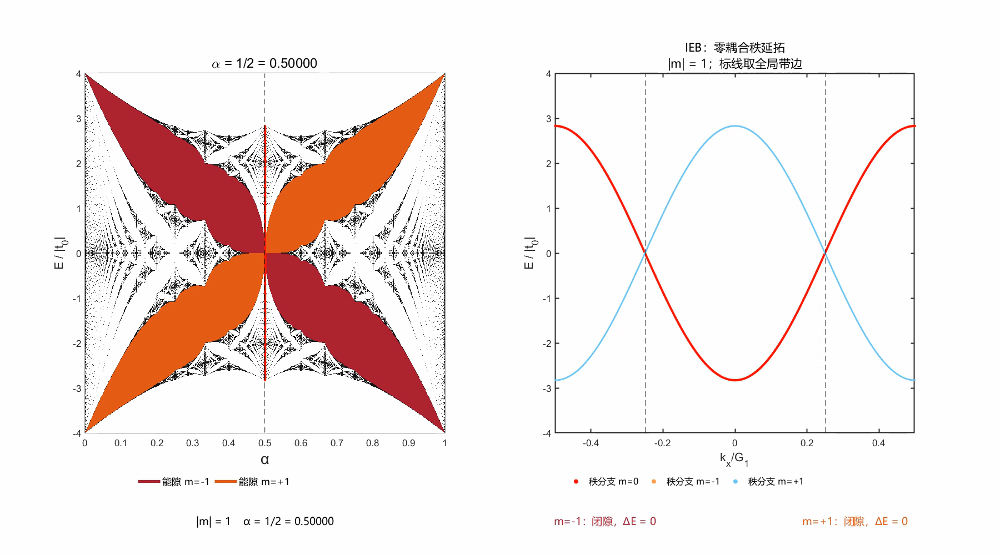

蝴蝶谱
研究演示霍夫施塔特蝴蝶谱的磁通扫描、动量分支与能隙
霍夫施塔特蝴蝶谱展示方格晶格中电子的允许能量如何随磁通变化。本页将这一谱结构与动量分辨的能量分支并置，以三段可切换的参数扫描动画呈现 |m| = 1、2、3 的能隙。
选择能隙阶数，或点击下方关键磁通。切换阶数会保留播放位置，便于比较同一磁通。视频中的播放时间仅用于浏览，不代表电子的真实演化时间。
动画演示
点击播放，或选择一个关键磁通定位画面。
如何阅读
两幅图来自同一模型。左图回答“这个磁通下允许哪些能量？”，右图回答“这些能量如何随所选动量路径变化？”。
| 图中元素 | 含义 |
|---|---|
| 黑色谱背景 | 均匀磁通网格上的完整允许能量带区间；窄于像素的能带保留最小像素标记。线条深浅不表示态密度。 |
| 酒红与深橙填充 | 两族目标能隙。酒红对应负能隙标签，深橙对应正能隙标签，颜色不按能量正负命名。 |
| 左图红点列 | 当前帧右图红色主秩分支的能量投影；不同红点来自不同动量。 |
| 右图浅灰谱线 | 沿所画动量路径计算的全部本征值。 |
| 右图彩色分支 | 选择 |m| = M 时，分别按中心、−M 副本、+M 副本裸态的能量排序位置选择分支。 |
| 竖虚线与粗彩条 | 黑色虚线标示布拉格参考位置；粗彩条的上下端点给出完整谱的全局能隙边界。 |
左图从第一帧起显示完整蝴蝶谱，三个视频共用同一底图。扫描时，黑色竖虚线与红色能量投影随当前磁通移动。
模型与物理量
磁通比 α 表示每个方格的磁通与单电子磁通量子之比。在等价的 AAH 表述中，它也是调制波数与原晶格倒格矢的比值。
有理磁通 p/q 下，耦合动量集合经过 q 步闭合，因此每个动量对应一个 q × q 矩阵。这里的 q 不是有限样品的总格点数。
代码采用 a = 1、t₀ = t₁ = −1，并关闭额外跃迁 t₂ = t₃ = 0。两图能量均按 |t₀| 归一化；横向动量按 G₁ = 2π/a 归一化。右图沿 kᵧ = kₓ 的对角路径作图。
IEB 与秩分支
本视频保留的是零耦合秩延拓：先关闭耦合，记录所选裸态在能量排序中的位置；恢复耦合后，在同一动量取同一排序位置的本征值。视频右图标题明确保留这一名称。
它是一种分支着色规则，未直接检验耦合波函数的中心动量权重，也没有通过连续改变耦合强度追踪波函数。因此，当前红线不被当作已经认证的波函数型 IEB。
分支副本编号与能隙整数标签有联系，但不能见到同一个字母就直接等同。当前代码约定下，在正侧布拉格位置，正能隙标签 +M 对应与 −M 裸副本的简并，负能隙标签 −M 对应与 +M 裸副本的简并。有理磁通下，副本编号按模 q 归并，因此某些分支会重合。
能隙与闭隙
底栏中的 ΔE 是完整谱的全局隙宽：高一条带的最低能量减去低一条带的最高能量。它不再使用沿红线相邻采样点的能量跳变量。
能隙标签按 r = mod(mp, q) 对应填充秩。r = 0 表示没有对应的内部隙；当内部两带接触时才记为闭隙。不同整数标签在有限有理磁通下可指向同一个能隙，不能据此计为不同的物理能隙。
| 阶数 | 中央闭隙示例 | 无内部隙 |
|---|---|---|
| |m| = 1 | α = 1/2 | 扫描区间内没有 |
| |m| = 2 | α = 1/4、3/4 | α = 1/2 |
| |m| = 3 | α = 1/6、1/2、5/6 | α = 1/3、2/3 |

这个例子表明：存在布拉格简并位置，不保证最终开隙。因此闭隙帧保留参考虚线，但不画有限宽度的能隙条。
数据与版本
页面播放的是 生成的三阶动画。该版加入 |m| = 2、3，采用统一完整底图、正方形绘图区和黑色虚线；保留零耦合秩延拓。2026 年 10 月 21 日旧版 MP4仍可下载对比。
| 视频验收 | 每段 1503 帧，1800 × 1000，10 fps。 |
|---|---|
| 采样范围 | 动画仍扫描1493个有理磁通，q ≤ 70；底图独立使用 α = j/1200（j = 0,…,1200），约分后 q ≤ 1200。不等同于直接求解无理磁通无限维算符。 |
| 背景与能隙标线 | 当前等跃迁方格模型的完整允许带区间与全局带边。左图底色、目标能隙均取统一磁通网格；右图标线和数值取当前扫描磁通。 |
| 保留的限制 | 底图是有限像素的谱区间表示，极窄能带以最小像素显示；没有能量平滑或沿磁通插值。IEB 的原简并端点排序约定保留，未新增 Chern 数计算。 |
参考资料
- Hofstadter’s butterfly — Wikipedia，主题背景与百科式页面布局参考。
- GitHub 从注册到上传静态网页 — CSDN，用户提供的静态网页制作方案。
- Creating a GitHub Pages site — GitHub Docs，静态网页发布方法。